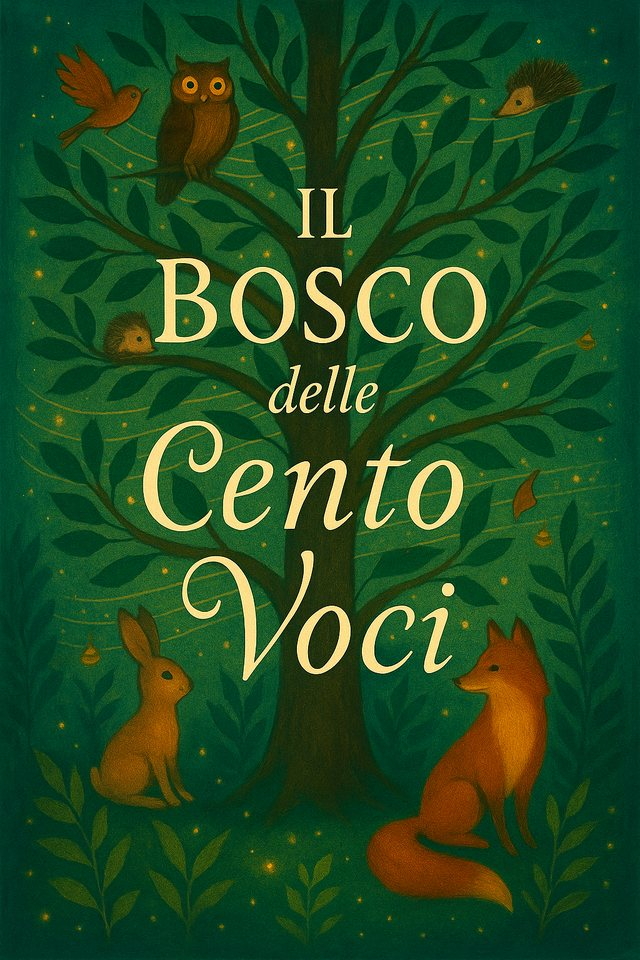

Il Boscodelle Cento Voci
di Vittoria Vineis
C’era una volta, e c’è ancora, un Bosco che non somiglia a nessun altro.
Lo chiamano il Bosco delle Cento Voci, ma in realtà nessuno è mai riuscito a contarle tutte.
Ventidue favole per bambini che non hanno paura delle domande e per i grandi che non hanno mai smesso di farsele.
Di che cosa parla
Il Bosco delle Cento Voci è una raccolta di favole intrecciate in cui ogni animale custodisce una fragilità, una domanda, un modo diverso di abitare il mondo. Nel Bosco le inquietudini personali e le grandi sfide del nostro tempo prendono la forma di sentieri, alberi, stagni e creature che cercano, si smarriscono, si incontrano.
Ogni storia aggiunge una voce alle altre, finché il Bosco stesso diventa un racconto corale: un luogo dove la fragilità non chiede di essere nascosta né guarita, ma ascoltata e accolta, e dove l'incontro con l'altro diventa il terreno fertile per una comunità che cura.
Qualche voce, per cominciare
Le storie si possono leggere in ordine oppure aprendo il Bosco dove capita. Gli animali sono sempre gli stessi e si ritrovano da un racconto all'altro.
La Volpe che cuciva le nuvole
Dedicarsi a qualcosa che gli altri non comprendono. Sul coraggio di seguire ciò che ci rende noi stessi.
Leggi → Racconto 7I cunicoli di Tamarinda
Sull’illusione di essere sempre connessi con tutti e sulla bellezza di tornare presenti nel mondo.
Leggi → Racconto 11La Cicala che collezionava echi
Cantare per sapere di essere ascoltati. Sul bisogno di conferme e sulla gioia liberatoria del liberarsene.
Leggi → Racconto 12La Libellula che non trovava il suo perché
Non trovare la propria etichetta. Sul definirsi oltre i ruoli predefiniti e sulla scopertache il nostro talento si compie quando siamo davvero noi stessi.
Leggi → Racconto 15Il Pipistrello che leggeva il buio
Chi non vede come gli altri può vedere altro. Sui molti modi di abitare il mondo.
Leggi → Racconto 20Un’insolita amicizia
Il sapore perduto nel miele e la fatica di fermarsi. Sulle due forme della tristezza e la cura dell’amicizia.
Leggi →Se vuoi restare ancora un po'
Qualche modo per starci dentro un po' più a lungo.
Spunti di lettura
Domande e attività pensate per accompagnare le bambine e i bambini alla scoperta di ciò che si nasconde tra le righe delle storie.
Vai agli spunti → In chiusuraFilastrocca del Bosco
I versi che chiudono il libro, quando tutti gli animali hanno già raccontato la loro storia. Si legge ad alta voce.
Leggila → Un invitoIl Bosco è aperto
Ci sono ancora tane senza abitanti e racconti senza volto. Chi disegna, chi scrive, chi legge ad alta voce. C'è spazio.
Entra →